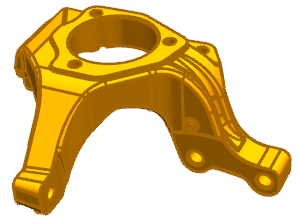
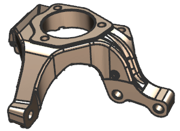

Change edge widths
-
Open gwy1_85_display_1.

-
On the Utility toolbar, click Edit Object Display
 .
.
-
In the Class Selection dialog box, click Select All
 , and click OK.
, and click OK.

-
In the Basic group, click the Width list, and notice the available widths.
-
From the Width list, select 0.25 mm.
-
Click OK.
